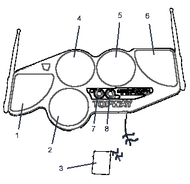
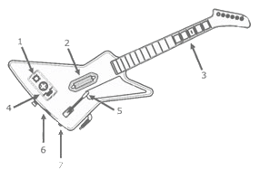

|  |
1-6.You will be using drum sticks to hit these buttons corresponding to notes that appear
on the screen. Buttons one through six you will want to map in this order: hihat, snare, bass,
hitom, lotom, and cymbal. This can be done through the controller configuration options screen.
2 (snare) and 5 (lotom) will be used for left/right up/down depending on the current screen.
6 (cymbal) will be used as a start button on certain screens. More on the options menu and
how to configure this option later in this manual. 7.select button, use this key to cancel the current screen. You may wish to map this to DigiBand's back button in the drum controller configuration. 8.start button, this will start/select/confirm options in the game. use this key to cancel the current screen. You may wish to map this to DigiBand's start button in the drum controller configuration. |
|
1. Start button, this will start/select/confirm options in the game. You may wish to map
this key to start in the options menu. 2. The pick, while holding the fret keys, strum to play the note as it displays on the screen. You will want to map strum up to pick and strum down to alt pick in the DigiBand guitar configuration options. 3. The fret buttons, to play the note displayed, hold the proper fret key and strum. You will want to map these five keys from the right to the left to red, green, and blue keys in the DigiBand guitar control options. This will be fine as the first 3, middle 3, or last 3 keys together. red and blue will be used to navigate up/down left/right depending on the screen. 4. The cross pad (Xbox360 only). Not used, but you may want one of the directions to be used as a back key. The back button (PS2 only), press this key to cancel and leave the current screen. You may want this mapped to back in the DigiBand guitar configuration options. 5. Wammy bar. Not used. 6. Tilting/Star power, Whenever a guitar cymbal appears in your notes, tilt the guitar for a bonus. This can be used by digiband for wailing. To map this, hold the guitar horizontally then press enter/start on the wailing key option, turn the guitar vertical and the guitar should now be mapped to wailing. 7. back button (Xbox360 only), press this to cancel and leave the current screen. You may wish to map this key to back in the options menu. |
 |
Drum Player
|
Guitar 1 Player
|
||||||||||||||||||||||||||||||||
System Keys
|
Guitar 2 Player
|